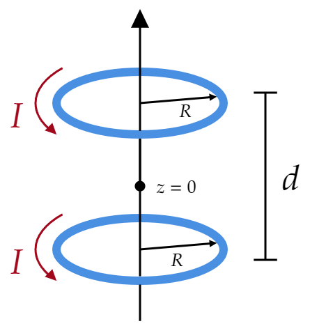

The magnetic field on the axis of a circular current loop (Eq. 5.41) is far from uniform (it falls off sharply with increasing $z $). You can produce a more nearly uniform field by using two such loops a distance $d $ apart (Fig. 5.62).
(a) Find the field ($B $) as a function of $z $, and show that $\frac{\partial B}{\partial z} $ is zero at the point midway between them ($z=0 $).
(b) If you pick $d $ just right, the second derivative of $B $ will also vanish at this midpoint. This arrangement is known as a Helmholtz coil; it's a convenient way of producing locally uniform fields in the laboratory. Determine $d $ such that $\frac{\partial ^2 B}{\partial z^2 } =0$ at the midpoint, and find the resulting magnetic field at the center. (Answer: $8\mu _0 I/5\sqrt{5}R $)
My solution